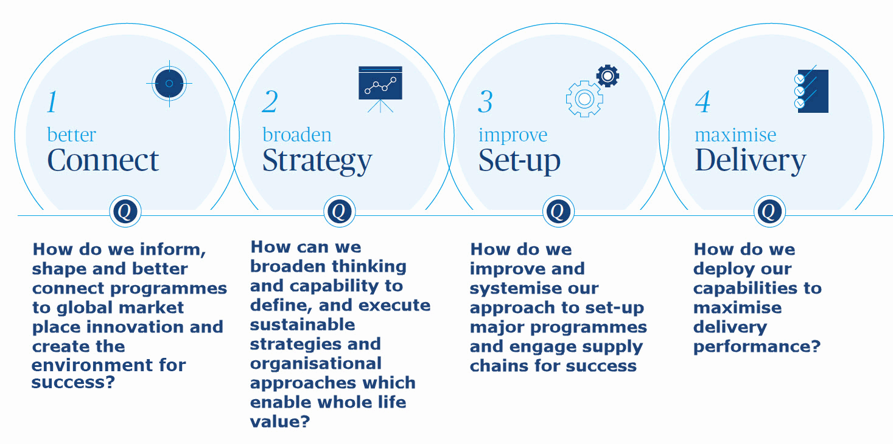
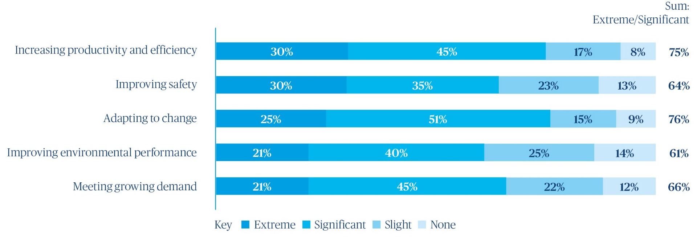
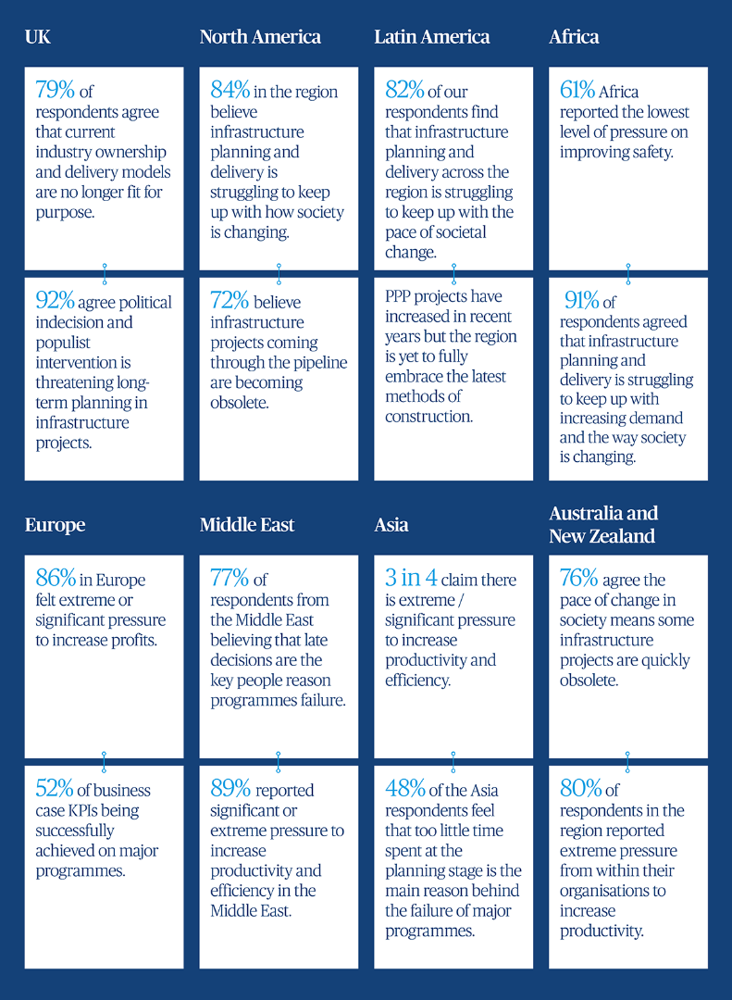
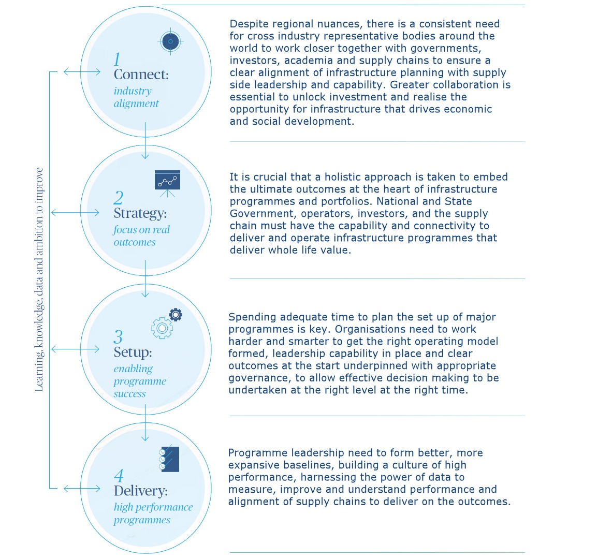

1
Could more be done to enhance the performance of infrastructure programmes?
 Murray Rowden
Regional Managing Director, Americas and Global Head of Infrastructure
Murray Rowden
Regional Managing Director, Americas and Global Head of Infrastructure
The infrastructure industry is under pressure to do more with less. There is huge competition for skills, an expectation of higher standards in delivery, growing sustainability objectives and increased levels of offsite construction.
Every major capital or asset programme provides another opportunity for the owner, operator and supply chain to improve delivery or operational performance, and ultimately enhance productivity and efficiency to benefit customers and society as well as shareholders.
Continual transformation, urbanisation, technological advancements and globalised market drivers, mean that as an industry, we have to do more, and fast.
The horizon looks bright for construction and infrastructure with global annual spend doubling and US$90trillion planned to be invested over the next decade. So how, as an industry, do we contribute to enhancing performance of major programmes that seamlessly flow into operation?
We pleased to present the emerging findings of global research which explores the challenges in delivering major infrastructure programmes, why they fail and how to enhance performance and ultimately deliver successful programmes.
2
Methodology
This research was conducted online from 20 April to 11 May 2018, with 1,183 senior industry experts and leaders participating around the globe who are involved in the delivery of major infrastructure projects.
- 7 Major infrastructure projects
- 5 Years
- 1.6 Trillion USD
On average, respondents have been involved in seven major infrastructure projects over the last five years, with the projects they’ve been involved in totalling a sum of USD$1.6 trillion.
Please note that the standard convention for rounding has been applied and consequently some totals may not add up to 100 percent.
3
How can you create the step change?
We invite senior infrastructure stakeholders to join us in a year-long debate and explore how, as an industry, we can better connect, broaden our strategy, improve set-up and maximise delivery.

We hope that you will join our industry leaders at a series of debates, events and discussions. To be a part of the step change, we encourage senior construction stakeholders to provide their details at [email protected].
We look forward to taking the debate and discussion further with you.
4
Global trends summary
What are the biggest challenges facing industry?

Regional highlights

The top three reasons why major programmes fail
48% of respondents believe insufficient time was spent in the planning stages. That number rises to 71% of respondents in the UK.
41% of respondents believe programmes fail due to poor governance set up or incorrect client structure.
31% of respondent point at lack of clarity on accountability and decision making processes.
What are the key barriers in setting up major infrastructure programmes successfully?
46% of respondents point to late decisions.
40% of respondents point to short-term thinking.
36% of respondents point to lack of appropriate experience in senior leadership roles.
What are the attitudes towards use of technology in infrastructure projects?
60% of respondents believe technology usage has the potential to enhance peformance.
48% of respondents consider the use of technology as an opportunity to gain competitive advantage.
42% of respondents said incompatible systems were seen as the main technology reason why major programmes may fail to perform. This rises to 69% in the Middle East and North Africa.
40% of respondents claim collaborative and management technology will most improve the delivery of major infrastructure projects.
23% of respondents claim the pace of technological change is difficult to keep up with.
5
Key research findings
Our analysis identified some common challenges on projects and programmes around the world.
Revealingly, 82 percent of respondents felt that infrastructure planning is struggling to keep up with how society is changing. When it comes to delivering projects, 76 percent agreed that current delivery models are no longer fit for purpose to meet the increasing demand.
But along with highlighting their pressures, we also asked respondents what they consider are measures of success and how they think better performance on programmes could be achieved. Perhaps unsurprisingly, delivering on time and within budget remain the top measures of success for the major infrastructure programmes surveyed - with safety, environmental and quality also rated high.
Despite some commonalities, the research has revealed significant regional differences, reflecting the varying levels of investment and market maturity. When it comes to the construction process, 71 percent in the UK said insufficient time spent at the beginning in planning stages, in contrast to just three percent in the USA. Reflecting on the human factor, ‘late decision making’ is rated particularly high at 77 percent, and short term thinking scored at 66 percent in the Middle East and North Africa.
In terms of enhancing performance, 32 percent believed both ‘new contracting approaches’ and ‘clearer governance structures’ would have the most positive impact on performance.
Better harnessing of data also featured high as a key area to help improve performance and drive efficiencies. Of all the technologies assessed, 40 percent globally and 62 percent of those in the UK believe collaborative and management technology will most improve the delivery of major infrastructure programmes.
Enhancing the performance of infrastructure programmes is critical for the sustained growth of the global sector but also for the economic and social development of our communities. Our research and experience shows that only a truly united approach will transform industry.
6
How to enhance performance
So how do those managing major programmes enhance performance? Our emerging findings and follow up market engagement will focus on the following four areas:

7
Regional commentary
A focus on outcomes and a programmatic approach will help the market realise the need and benefits of infrastructure investment including Africa’s economic and social potential.
 );
);
Bruce Ross, Mark Haselau
Directors, Africa
Investment in programme planning could overcome some engrained cultural barriers to change in this dynamic, high-growth region.
Stronger governance and new approaches to technology are needed to capitalise on a strong pipeline of work and mature investment models.
 );
);
Darren Munton
Director, Australia
Building capability in infrastructure strategy and programme set-up will help Europe weather the political storms in such a mature market.
 );
);
Astrid Boumans
Associate Director
A growing market with significant potential but further investment is required in client side programme management capability if new models for delivery are to be realised and further private sector investment made.
 );
);
Gareth Whisson
Managing Director, Latin America
The Middle East market is developing at a fast pace – better performance can be unlocked with longer-term planning and clearer communication of the business case for infrastructure.
 );
);
David Smith
Director
Demand is strong and the approach to infrastructure finance, operation and programme delivery is maturing – further coordinated development of client and supply chain capabilities will be critical for effective delivery of the planned investment.
 );
);
Anthony Sanger
Director, North America
Despite macroeconomic uncertainty, new models for delivery are gaining momentum and could transform infrastructure performance.
 );
);
David Whysall
UK Infrastructure Managing Director
8
Relevant articles


9
Key contacts
10
Download the results
If you'd like to download a PDF version of this research, and emerging insights contained in it, enter your details below and we will send you an email with a copy.